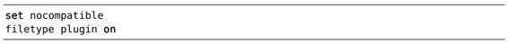

），可以让我们更改其缺省设置。但‘spelllang’选项并不是全局性的，它永远只在本地缓冲区生效。这意味着在编辑两个或两个以上的文档时，可以分别采用不同的拼写文件。如果你是用双语进行写作的话，这样做的确很方便。
），可以让我们更改其缺省设置。但‘spelllang’选项并不是全局性的，它永远只在本地缓冲区生效。这意味着在编辑两个或两个以上的文档时，可以分别采用不同的拼写文件。如果你是用双语进行写作的话，这样做的确很方便。技巧119使用其他拼写字典
Vim的拼写检查器本身就支持英语的区域性变体。接下来，我们将研究如何指定这些区域，以及如何获取其他语言的拼写字典。
一旦我们启用了Vim的拼写检查器，它将以英语字典作为缺省的拼写字典进行单词比较。通过配置‘spelllang’选项（参见:h 'spelllang'），可以让我们更改其缺省设置。但‘spelllang’选项并不是全局性的，它永远只在本地缓冲区生效。这意味着在编辑两个或两个以上的文档时，可以分别采用不同的拼写文件。如果你是用双语进行写作的话，这样做的确很方便。
指定某个语言的区域性变体
Vim的拼写文件本身就支持英语的几种区域性变体。缺省设置spelllang=en意味着所有被以英语为母语的地区所认可的单词都是合法的。无论我们输入的是“moustache”（采用英式拼法）还是“mustache”（美式拼法），Vim的拼写检查器都认为是正确的。
我们可以指示Vim只接受美式拼法：
➾ :set spell
➾ :set spelllang=en_us
这样设置后，“moustache”将被标记为拼写错误，而“mustache”则是允许的。Vim所支持的其他区域包括en_au、en_ca、en_gb以及en_nz。有关更多细节，请参考:h spell-remarks。
获取其他语言的拼写文件
Vim的发行版本身就内置了支持英语的拼写文件，但你也可以到http://ftp.vim. org/vim/runtime/spell/下载它所支持的其他几十种语言的拼写文件。
如果我们试着加载某个尚未得到系统支持的拼写文件时，Vim会为我们提供下载与安装的方法：
➾ :set spell
➾ :set spellang=fr
《 Cannot find spell file for "fr" in utf-8
Do you want me to try downloading it?
(Y)es, [N]o:
➾ Y
《 Downloading fr.utf-8.spl
In which directory do you want to write the file:
1. /Users/drew/.vim/spell
2. /Applications/MacVim.app/Contents/Resources/vim/runtime/spell
[C]ancel, (1), (2):
该功能由一个名为spellfile.vim的插件实现，并且已经内置于Vim的发行版（参见:h spellfile.vim）中。为了激活该功能，你需要将以下两行内容复制到vimrc中（至少这两行）：
